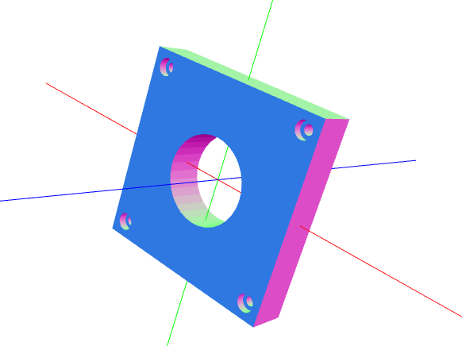

CadQuery Design Principles¶
Principle 1: Intuitive Construction¶
CadQuery aims to make building models using python scripting easy and intuitive. CadQuery strives to allow scripts to read roughly as a human would describe an object verbally.
For example, consider this object:
A human would describe this as:
“A block 80mm square x 30mm thick , with countersunk holes for M2 socket head cap screws at the corners, and a circular pocket 22mm in diameter in the middle for a bearing”
The goal is to have the CadQuery script that produces this object be as close as possible to the english phrase a human would use.
Principle 2: Capture Design Intent¶
The features that are not part of the part description above are just as important as those that are. For example, most humans will assume that:
- The countersunk holes are spaced a uniform distance from the edges
- The circular pocket is in the center of the block, no matter how big the block is
If you have experience with 3D CAD systems, you also know that there is a key design intent built into this object. After the base block is created, how the hole is located is key. If it is located from one edge, changing the block size will have a different affect than if the hole is located from the center.
Many scripting langauges do not provide a way to capture design intent– because they require that you always work in global coordinates. CadQuery is different– you can locate features relative to others in a relative way– preserving the design intent just like a human would when creating a drawing or building an object.
In fact, though many people know how to use 3D CAD systems, few understand how important the way that an object is built impact its maintainability and resiliency to design changes.
Principle 3: Plugins as first class citizens¶
Any system for building 3D models will evolve to contain an immense number of libraries and feature builders. It is important that these can be seamlessly included into the core and used alongside the built in libraries. Plugins should be easy to install and familiar to use.
Principle 4: CAD models as source code makes sense¶
It is surprising that the world of 3D CAD is primarily dominated by systems that create opaque binary files. Just like the world of software, CAD models are very complex.
CAD models have many things in common with software, and would benefit greatly from the use of tools that are standard in the software industry, such as:
- Easily re-using features between objects
- Storing objects using version control systems
- Computing the differences between objects by using source control tools
- Share objects on the internet
- Automate testing and generation by allowing objects to be built from within libraries
CadQuery is designed to make 3D content creation easy enough that the above benefits can be attained without more work than using existing ‘opaque’, ‘point and click’ solutions.